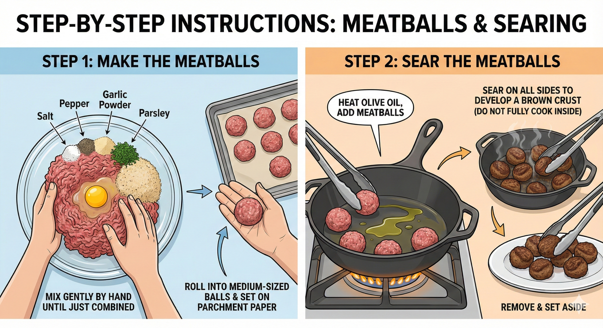
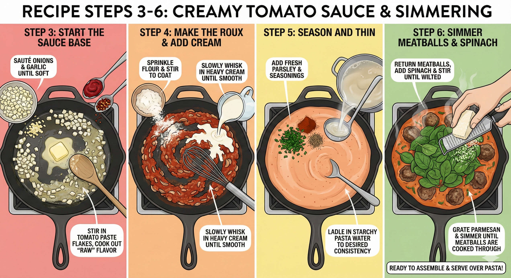

Comfort food at its finest. Seared beef meatballs simmered in a rich, orange-pink creamy tomato sauce packed with fresh spinach and parmesan.


Don't plate dry noodles! Toss your cooked drained pasta in a large bowl with two ladles of the finished sauce before plating. This ensures every bite is flavorful.